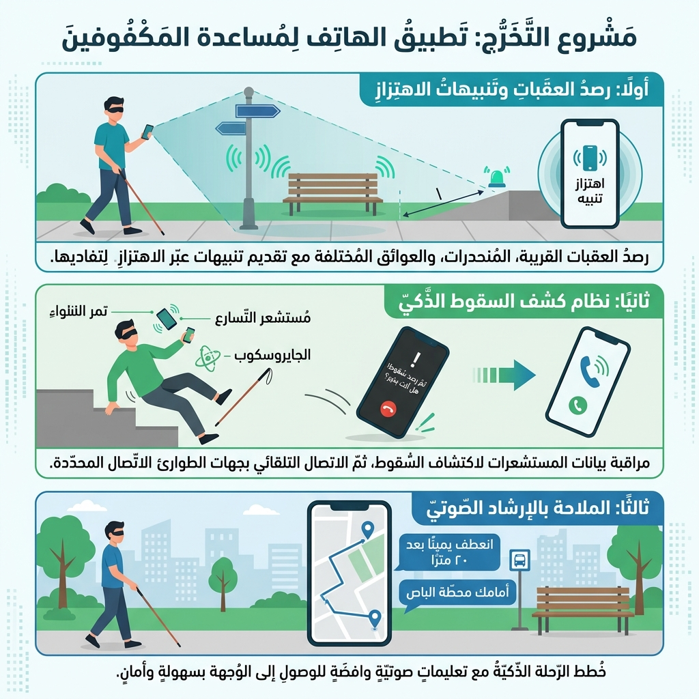
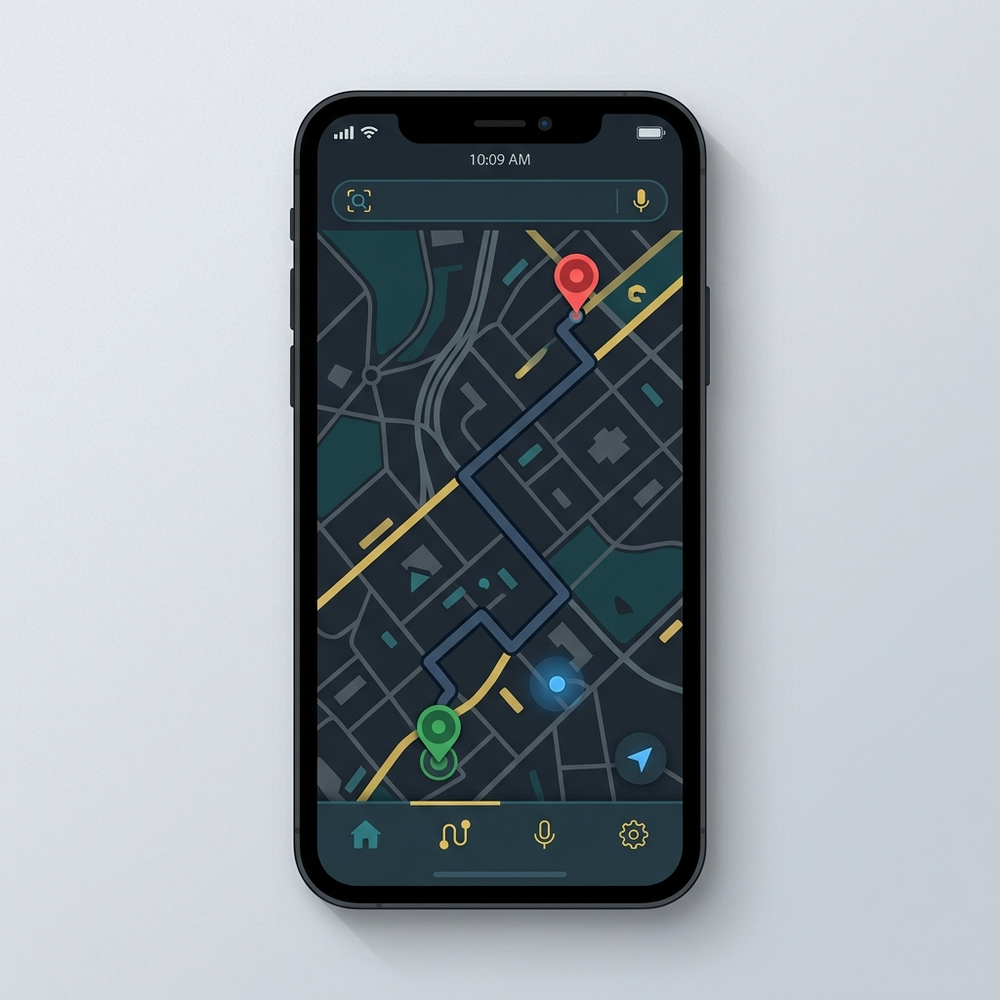
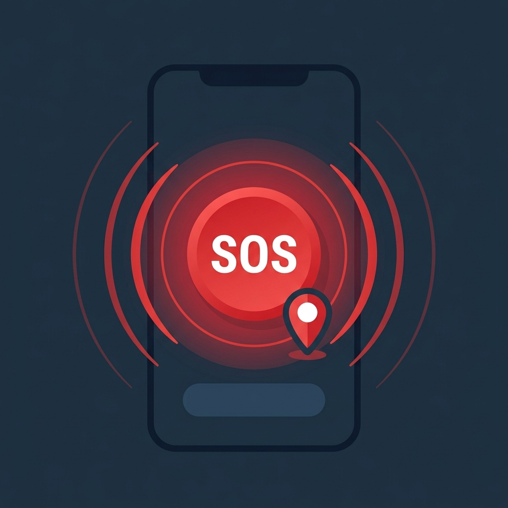

تطبيق ذكي متكامل يساعد المكفوفين وضعاف البصر على التنقل بأمان واستقلالية، من خلال التعرف على المحيط وتنبيه المستخدم صوتياً والتواصل الفوري مع المنقذين — كل ذلك بأوامر صوتية بسيطة.
مشروع تخرج أكاديمي يهدف إلى تسهيل حياة المكفوفين وضعاف البصر وتمكينهم من التنقل والتواصل بأمان واستقلالية

اكتشاف تلقائي للعوائق في طريق المستخدم وتنبيهه فوراً
نظام حماية يكشف السقوط ويتواصل مع الطوارئ تلقائياً
إرشادات صوتية دقيقة توجّه المستخدم خطوة بخطوة
يعاني ملايين المكفوفين حول العالم من تحديات يومية — يُمناك يقدم حلاً عملياً متكاملاً
يواجه المكفوفون تحديات خطيرة يومياً تؤثر على استقلاليتهم وسلامتهم:
تطبيق هاتف ذكي شامل يوفر نظام حماية متكامل للمكفوفين:
ست مميزات أساسية تشكل منظومة حماية وتواصل شاملة للمستخدم الكفيف
تحلل ما أمام المستخدم وتخبره صوتياً بما يحيط به مع تنبيه فوري عند وجود خطر أو عائق.
يتحكم المستخدم بكل شيء بصوته فقط — يفتح الكاميرا، يطلب التوجيه، أو يرسل استغاثة بدون لمس.
يحدد المستخدم وجهته بالصوت ويحصل على إرشادات صوتية واضحة خطوة بخطوة حتى يصل.
بضغطة واحدة أو أمر صوتي يُرسل موقعه الدقيق للمنقذ المرتبط بحسابه مع تنبيه عاجل.
محادثة فورية مع المنقذ — يسمع الكفيف الرسائل صوتياً ويرد عليها بصوته بدون كتابة.
يوجّه الكاميرا لأي شيء فيخبره التطبيق ما هو وكم يبعد عنه — يعمل بدون إنترنت.
عرض مبسّط لآلية عمل كل ميزة من وجهة نظر المستخدم الكفيف
يفتح المستخدم الكاميرا بأمر صوتي، فيبدأ التطبيق بتحليل المشهد أمامه وإخباره بما يراه:
يقول المستخدم وجهته بالعربية، ويبدأ التطبيق بتوجيهه صوتياً:


عند الشعور بالخطر، يطلب المستخدم المساعدة فوراً:
التطبيق مصمم بالكامل ليعمل بالصوت فقط:
للمنقذ واجهة خاصة يتابع من خلالها حالة الكفيف ويتواصل معه
يرى المنقذ إذا كان الكفيف متصلاً ويعرف آخر موقع معروف له في الوقت الحقيقي.
تنبيه فوري بشاشة كاملة عند طلب الكفيف للمساعدة مع موقعه الدقيق على الخريطة.
يرسل رسائل للكفيف يسمعها صوتياً، ويستقبل منه رسائل نصية وموقعه الجغرافي.
يرى موقع الكفيف على الخريطة ويحسب المسافة بينهما ويتوجه إليه مباشرة.
ثلاث خطوات بسيطة للبدء
يسجّل المستخدم كـ"كفيف" أو "منقذ" ثم يربط حسابه بالطرف الآخر لتفعيل التواصل والاستغاثة.
الشاشة الرئيسية مصممة للتحكم الصوتي — يضغط في أي نقطة ويقول أمره: "افتح الكاميرا" أو "خذني للمسجد".
يستخدم الكاميرا للتنبيهات أو التوجيه للملاحة أو SOS لإرسال موقعه للمنقذ فوراً عند الحاجة.
نظام مساعدة ذكي متكامل يمكّن المكفوفين من التنقل بأمان والتواصل باستقلالية